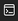

0-65535までのランダムな数字が1/30秒の間に切り替わっていくよ！65535で止めてみよう！
0
開始
クリア条件スロットを65535で止めること 1st HINT「目押しで２バイト！」では、スロットが回っている際に表示される数字を決める処理に、「Math.random」というJavaScriptWebサイトの開発において広く使用されているプログラミング言語のことです。JavaScriptを使用すると、Webページに動きをつけることができるよ！の関数複数の処理をまとめた塊のこと。「関数名();」とすることで、関数を呼び出すことができるよ！を使用しています。Math.random関数は、0から1未満の乱数を生成してくれるよ！ 2nd HINTスロットが回っているときに表示される数字を求めるために使用する式は、「65535 × Math.random()」です！でも、Math.random関数が生成する乱数は0から1未満（１は出ない）だから、65535は絶対に出ないようになっているよ！なら... 3rd HINTまずは演習画面の好きな場所を右クリックして、開発者ツールを開きましょう！その後、開発者ツールに表示されているのアイコンをクリック。（このアイコンはEdgeを使用した場合に表示されるものです。）次に、「>」の部分をクリックしてからMath.random = function () { return 1 };「Math.random関数が生成する値を常に1にする」という意味のスクリプトです。ちなみに、「return 1」の部分は「関数の処理の結果(これを戻り値と言います。)が1である」という意味です！と入力し、スロットを回すためのボタンを2回押すと...? この演習の解説を見る
情報科学専門学校 2021